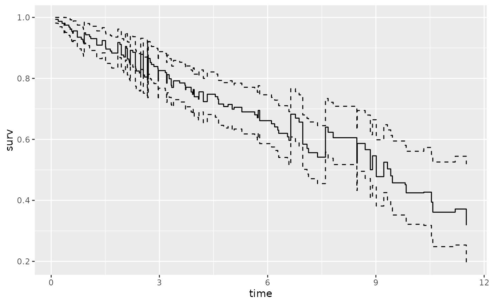

nonparametric Nelson-Aalen estimates
Arguments
- interval
name of the interval variable in the training dataset.
- censor
name of the censoring variable in the training dataset.
- data
name of the survival training data.frame
- by
stratifying variable in the training dataset, defaults to NULL
- weight
for each observation (default=NULL)
- ...
arguments passed to the
survfitfunction
Value
gg_survival object
See also
gg_survival nelson
plot.gg_survival
Examples
# These get run through the gg_survival examples.
data(pbc, package = "randomForestSRC")
pbc$time <- pbc$days / 364.25
# This is the same as gg_survival
gg_dta <- nelson(
interval = "time", censor = "status",
data = pbc
)
plot(gg_dta, error = "none")
plot(gg_dta)
# Stratified on treatment variable.
gg_dta <- gg_survival(
interval = "time", censor = "status",
data = pbc, by = "treatment"
)
plot(gg_dta, error = "none")
plot(gg_dta, error = "lines")

plot(gg_dta)
gg_dta <- gg_survival(
interval = "time", censor = "status",
data = pbc, by = "treatment",
type = "nelson"
)
plot(gg_dta, error = "bars")
plot(gg_dta)